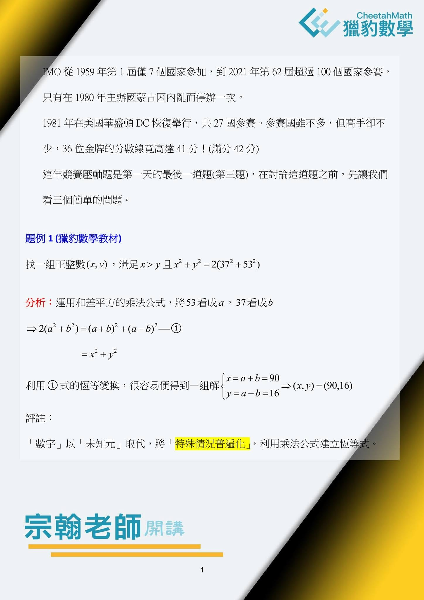
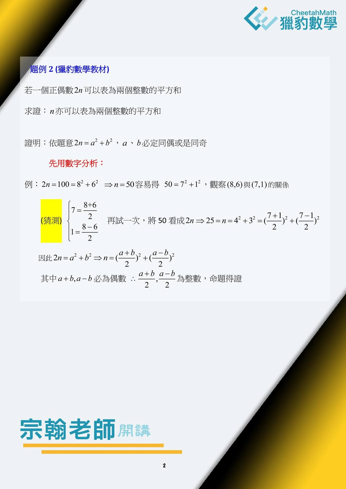
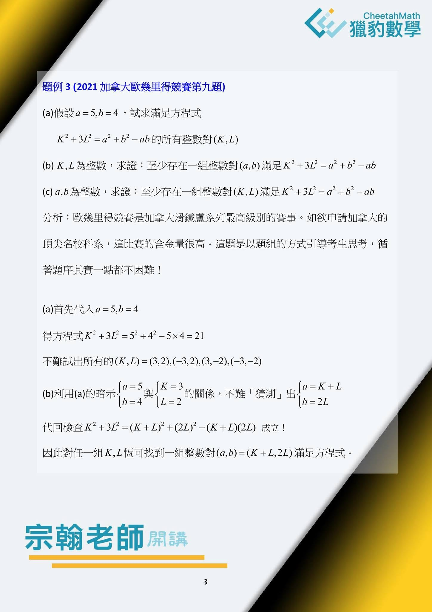
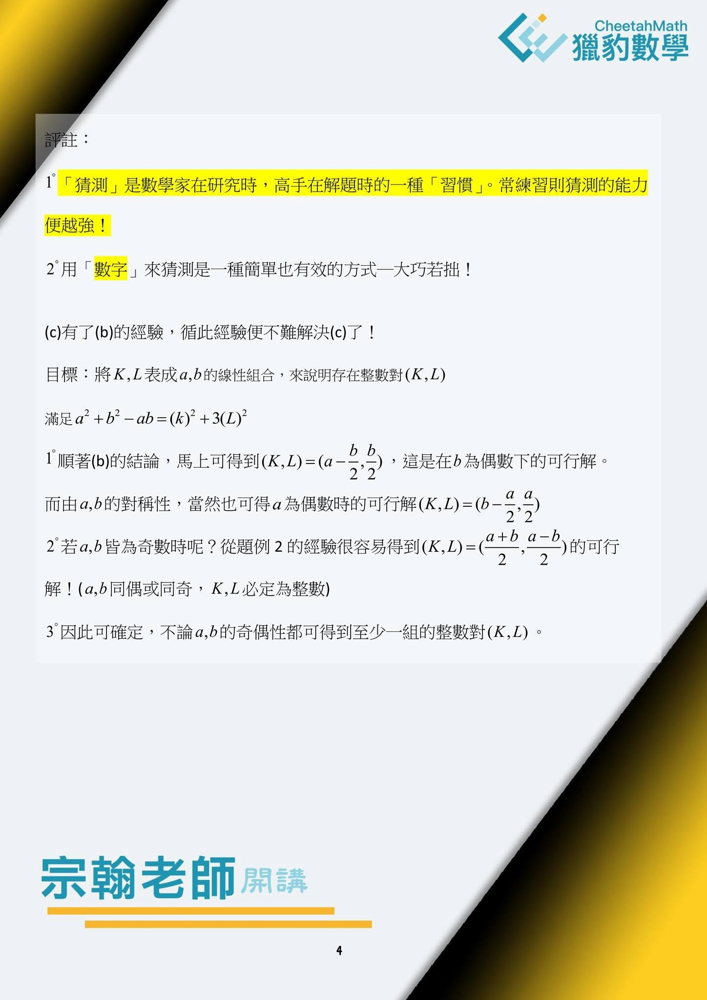
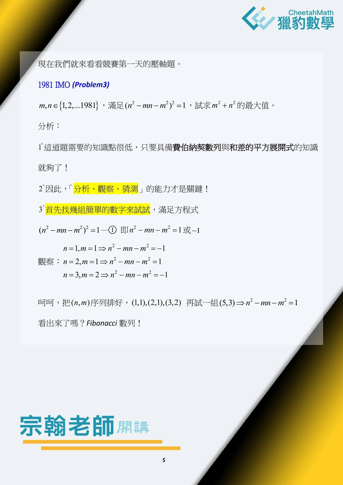
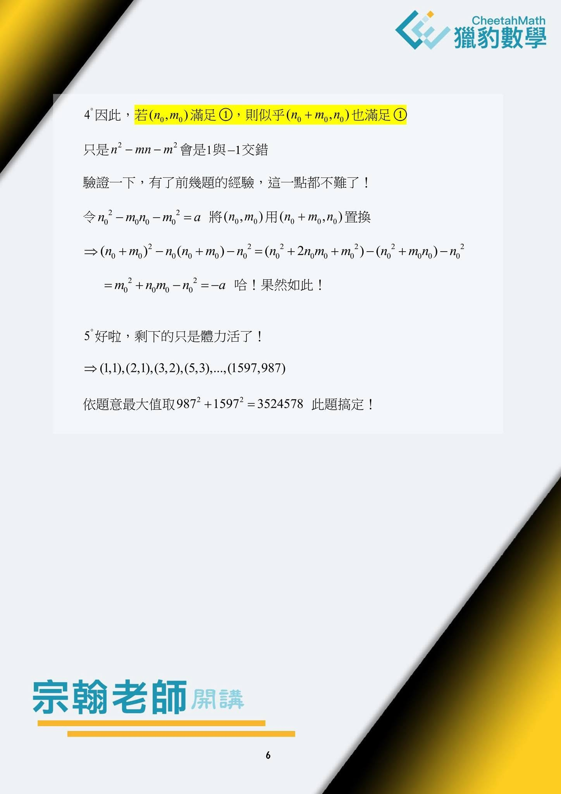

一道IMO題的思路
~宗翰老師開講~
這次不少數學高手參與「獵豹數學節」的輕競賽課程FS01，他們期待的是老師們能帶領他們攀登更高的數學山峰，達到更高的境界！
有同學參加過清大數學培訓課程，期待能再聆聽獵豹幾位參與培訓講座的老師（硯吉、青易…）的精彩深入課程。
更難得的是獵豹召集人宗翰老師也親自參與課程策劃與授課！
今天我將以前宗翰老師在初級奧數訓練課中的紀錄，講解一道奧數壓軸題的思路過程分享給同學們。
看看如何從基本的乘法公式切入，最後 輕騎過關，水到渠成。
答案終於破繭而出！
這便是宗翰老師典型教學風格！
PS:注意宗翰老師在每次解題前後的「分析」與「評註」，非常重要！
這些「分析」與「評註」是解題高手 經驗的累積、心路歷程、思維的軌跡！
https://www.facebook.com/groups/695697124716309/permalink/881829459436407/





